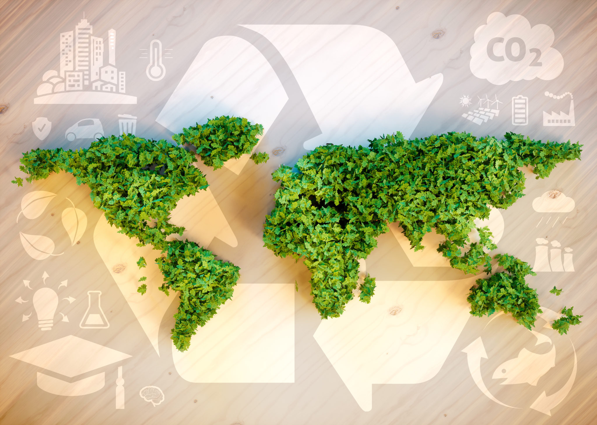

Garbage Classification
Types of recycling bins
There are three types of recycling bins that have been provided by the government to dispose of recyclable items. Each colour of the bins represent different uses. These recycling bins come in various sizes – 80 litres, 120 litres, 240 litres, 360 litres, and 660 litres.
Blue Bin
Used for
- Paper
- All coloured and non-coloured paper such as newspapers, magazines, books, catalogue sheets, brochures, calendars, cars, envelopes, and cardboard boxes
Not including
- Tissue paper
- Carbon paper
- Baking sheets
- Laminated paper
- Dirty paper
Brown Bin
Used for
- Glass
- All coloured and non-coloured glass such as soft drink bottles, food containers, vitamin bottles, and cosmetic bottles
Not including
- Crystal
- Mirrors
- Window glasses
- Vehicle screens
- Porcelain
- Ceramic
- Metal
- Lab items
- Jars
- Toxic glass bottles
Orange Bin
Used for
- Aluminium tins
- Steel tins
- Plastic
- All kinds of aluminium and steel tins such as soft drink tins and food product tins
- All coloured and non-coloured tins such as shopping bags, bottle drinks, mineral water bottles, food containers, detergent bottles, and vitamin bottles
Not including
- Paint tins
- Toxic containers
- Lab items
- Styrofoam containers
The Significance of Garbage Classification
Reduce environmental pollution garbage sorting
Because garbage is not classified, modern garbage contains chemical substances, and some will cause the incidence of people to increase. If you dispose of garbage by landfilling or stacking, even if you are away from the living place and landfill the garbage, and adopt the corresponding isolation technology, it is difficult to prevent the penetration of harmful substances, which will enter the entire ecosystem with the circulation of the earth , Pollution of water sources and land, through plants or animals, will ultimately affect people's health.
Save land resources
At present, there are two ways to dispose of garbage in our country, one is landfilling, and the other is garbage stacking. No matter what kind of garbage, the essence is to transport garbage from one place to another and still occupy land resources. For now, landfills are the simplest and most convenient way of disposal, but they are extremely unfavorable for future development. The land resources of a country are fixed, and the per capita land in China, especially the cultivated land per capita, is below the world average. Landfills are irrecoverable sites, that is, they cannot be used as living quarters again. If the land resources are turned into garbage disposal sites, it is equivalent to chronic suicide, and the cost of land restoration in the future will be very expensive.
Utilization of renewable resources
The generation of garbage is because people do not make good use of resources, and discard the resources they do not use as garbage. This waste of resources is inestimable for the loss of the entire ecosystem. Once the garbage is disposed of by landfill or incineration It is extremely difficult to reuse it. Before the garbage treatment, the garbage can be turned into treasure through waste sorting and recycling, such as recycling paper can protect the forest and reduce the waste of forest resources; recycling biological waste such as peel vegetables can be used as a green fertilizer to make the land more fertile.